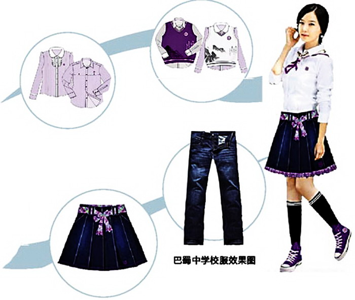
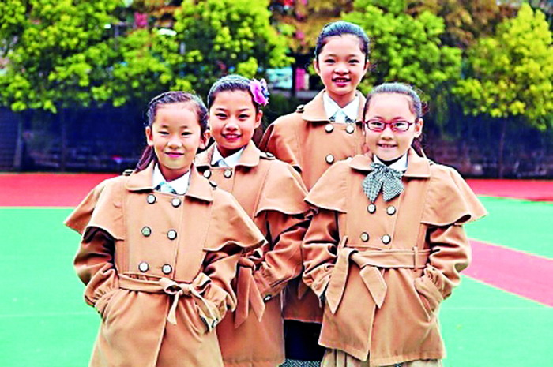

巴蜀中学女生校服
3月24日，央视《新闻1+1》以《校服如何“致青春”？》为题，对重庆巴蜀中学等推行校服改革一事进行了关注。一时间，巴蜀中学的英伦风校服受到热捧。不少网友感叹：“酷毙了，简直可以拍内地版的‘流星花园’了！”
重庆商报讯 “在中小学校服改革方面，重庆率先探索，走在了全国前列。”昨日，重庆市学生装技术研发中心主任张岳芝称，我市中小学生穿着开始注重青春、时尚元素，主城50%以上的中小学校服，不再是清一色的“运动装”。
巴蜀中学新校服受网友热捧
“从小学到高中，我穿的校服都是大同小异的运动装，感觉‘土爆了’，但愿弟妹们能解放出来！”已在重庆大学读大二的陈青松在高中同学QQ群中“观战”两天后，前不久终于忍不住也加入到了中小学校服改革讨论的行列。
原来，连日来，北京某中学运动式校服遭网友吐槽“丑到爆”，引发了全国网友对校服的热议。而央视《新闻1 1》3月24日以《校服如何“致青春”？》为题，对重庆巴蜀中学校服改革进行报道后，网友们开始关注重庆中小学的校服改革。
巴蜀中学党办主任付英介绍，学生校服一度也没引起学校重视，直到2011年，学校通过调查才意识到，“运动服就是校服”已持续了近20年不变，家长、老师、学生都有了“倦”意，校服也应与时俱进，体现不同的时代特点。为此，学校将校服改革纳入了“校园文化”建设。
为了突出年轻人青春、时尚的气息，彰显年轻人身上的朝气、活力，他们请来专业设计公司设计校服。随后，在学校的组织下，由家长代表、学生代表及老师组成的评议团，开始为新校服设计出谋划策。校服采取公开对外招投标，各个厂家来进行展示，进行公开投票，最后6家服装厂参与投标，汇集了100款设计方案。
最终，各方确定了一套融入了学校特色文化的英伦式校服和一套运动服：男生穿白边翻领黑色小西装，内配灰白衬衣加紫色斜条纹领带；女生着白色桃尖背心，外加格子齐膝短裙。青春、时尚、靓丽的设计，倍受学生青睐。2012年底，新校服在学校的初一和高一年级试行，当学生们穿着时尚的新校服“亮相”时，引起了不少中小学的关注，并让很多学生羡慕不已。
而近日央视的关注，更是将巴蜀中学的时尚校服推向了全国。网友们不禁感慨：“酷毙了，这是要拍内地版的‘流星花园’吗？”就连已毕业的巴蜀中学学生，也纷纷要求学校为毕业生出纪念版校服。
巴蜀中学男生校服
主城学校开始突出自身特色
“不一定要‘英伦风格’，但至少穿起不光像运动员或服务员。”付英说，巴蜀中学推出的新校服，带动了主城众多中小学“跟风”。不少学校近两年也纷纷为学生们设计出了新颖时尚、青春靓丽的校服，让学生们穿出了精神、穿得美观，体现出了孩子们的朝气蓬勃。
据了解，个性化的小西装、格子百褶裙、开襟毛衫、毛背心等，这些以往只能在电视剧中看到的校服，如今出现在南开中学、谢家湾小学、巴川中学、巴蜀小学等校园内。这些学校的新校服，不论是在色彩搭配还是款式设计上，都有较大进步。
“大多数校服不仅在色块分割、颜色搭配上下了工夫，还注重了点、线、面的艺术结合，把握学生个性化发展的需求。”重庆市学生装技术研发中心主任张岳芝介绍，不少学生因此从“不想穿”变成“想要穿”。“和其他地方相比，重庆的校服改革这几年步子迈得很大，可以说走在了全国前列。”张岳芝说，主城50%以上的中小学校目前都有了自己的特色校服，不再是单一的“运动装”。
“让学生穿校服有利于培养学生的整体意识和自我约束意识。”张岳芝说，穿上校服后，大多数学生会自觉提醒自己要按学生的日常行为规范要求自己，有利于学生良好习惯的养成。“另一方面，在校期间统一着装还能避免学生在穿着打扮上的攀比，可使低收入家庭的学生不再有穿着落伍的压力，不会因着装而感到自卑，进而改善校园氛围和学生的学习态度，营造出一种平等和谐的教育氛围。

专家：让校服与时代潮流接轨
“我们不能把校服当作一件只是穿着上的小事，它甚至能影响到孩子的成长。”社会心理学家、重庆市协和心理顾问事务所所长谭刚强等人认为，学生也有对美的追求，而有品位的校服有利于提高学生的审美观念，对他们一生都有重大影响。只有从小培养孩子的审美意识，让他知道什么是美，怎么选择美，他们长大后，生活才不会呆板单一，才会努力创造，拥有一个丰富多彩的人生。
市教科院有关负责人称，从全国来看，中小学校服改革都是件大事，必须让校服与时代潮流接轨。目前，我市一些区县校服改革力度还不够，北京某中学校服遭网友吐糟一事，让重庆的学校、家长、学生都感受到了校服改革的趋势和必要性。

梁平第一实验小学校服
声音
运动式校服
优点也不少
在运动式校服遭网友吐槽的同时，也有人在力挺它。儿子在南开中学读初二的市民彭女士说，中小学校服要与时俱进，这无可厚非。但在长期的运用中，运动式校服也有很多优点，比如它更有舒适度包容度，在上体育课时更方便等，因此它有自己的适用人群，不能把过去的东西都说成是落后的，不能一棒子打死。
张岳芝也称，由于我市的公办中小学基本都没有专用的更衣室，也没有国外学校的个人衣橱，运动前学生换衣服不方便，运动式校服无疑仍长期是学校和学生的选项。而要考虑的，无非是在款式等方面创新。